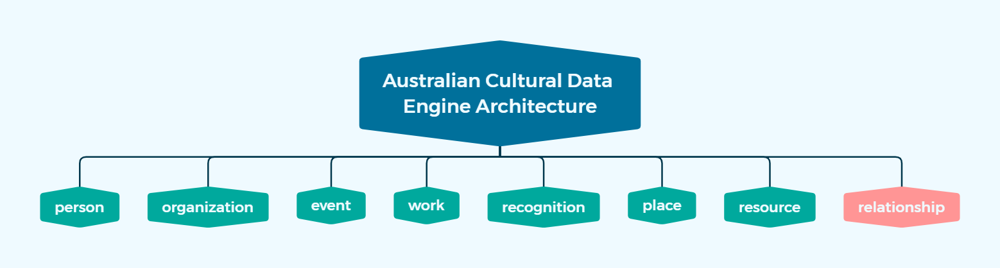

Australian Cultural Data Engine Architecture
Contents
Australian Cultural Data Engine Architecture¶
Introduction¶
To construct a comprehensive and consistent view of data from various cultural databases, the development of a unified data model is crucial. The unified data model is named as the Australian Cultural Data Engine Architecture, or ACDEA for short. The ACDEA serves as the foundation effectively for integrating and harmonizing data from multiple data sources. By constructing the ACDEA, insights can be gained into the vaiuos data models that underpin the different cultural databases, thereby helping to clarify the number of entites in each data sources. as well as doing comparison analysis on the definition of entity unit concept in each data source.
It should be noted that the ACDEA is currently only a prototype for integrating existing data sources. As discussions around improving data integration performance and clarifying professional domain definitions continue, and as more data sources are accumulated, the ACDEA may be modified accordingly.
The following sections will begin with a brief overview of the ACDEA, followed by a description of the general procedure of the ACDEA construction workflow.
Overview of the Australian Cultural Data Engine Architecture¶
To construct a unified data model for the Australian Cultural Data Engine, a set of 8 entities were identified from the overlapping entities of all the data models of the current data sources. These entities are collectively referred to as “levels” within the Australian Cultural Data Engine Architecture. The 8 levels include person, organization, event, work, recognition, place, resource, and relationship. These entities were selected based on their relevance to cultural data, and their ability to provide a comprehensive view of the data from the various cultural databases.
The conceptual level diagram below presents the Australian Cultural Data Engine Architecture:

Each level within the ACDEA serves a unique and important purpose in the overall model. Additionally, each level contains three essential types of data:
The metadata of the record, including the original (database) ID, URL, associated level name, timestamps, and other important details. This metadata is crucial in maintaining the integrity and traceability of the data.
The specific content details of the record.
The one-dimentional related records of the particular record refer to its direct connections to other records within the same level. This feature provides easier access to the one-dimensional relationship network of a particular record, while all relationship records can be found in the relationship level.
The content detail summary of each level are described as follows:
Person Level: representing individuals who are relevant to the cultural data.
Names: all types of names of the person, including display name, primary name and alternative names.
Summary: the biography summary of the person
Gender
Birth: the date and place of birth
Death: the date and place of death
Long Term Roles: the roles that the individual has held for an extended period of time.
Career: the features about career.
Residences: the time and place of the person has resided.
Languages
National Library Archive ID: The ID assigned by the National Library of Australia for the same individual.
Organization Level: representing organizations that are relevant to the cultural data.
Names: all types of names of the organization, including display name, primary name and alternative names.
Description: the brief description of the organization.
Types: the types of the organizations.
Long Term Roles: : the roles that the organization has held for an extended period of time.
Operation: the features about operation of the organization.
Locations: the places where the organization has been located.
Event Level: representing cultural events.
Title
Description: the brief description of the event.
Types: the types of the events.
Time & Place: the specific date and location where the event took place.
Work Level: representing cultural works such as books, architecture, performance , art, and etc.
Titles: all types of titles of the work, including primary title and alternative titles.
Summary: the summary of the work.
Time & Place: the specific date and location where the work was created.
Recognition Level: representing awards or recognition received by individuals or organizations.
Title
Summary: the summary of the recognition.
Types: the types of the recognition.
Time & Place: the specific date and location where the recognition was granted.
Place Level: representing the locations that are geographic locations or facilities where the cultural events take place.
Names: all types of names of the location, including primary names and alternative names.
Address: the standardized physical address of the location, including country, state, suburb, street and postcode.
Geo-Coordinates: the geographic coordinates (latitude and longitude) of the locations.
Start & End Date (Optional): the start and demolished date of a location, which is the optional information in tracking the changes of a location whose type is “venue” over time.
Resource Level: represents resources that are relevant to the cultural data, such as books, images, paintings and audio files. The content details of this level refer to the metadata schema used in the National Library of Australia.
Titles: all types of titles of the resource, including primary title and alternative titles.
Description
Type
Authoring: the author or creator information of the resource.
Source: the source of the resource.
Date: the associated dates of the resource, such as created date, published date, etc.
Acquisition: the method or process used to acquire the resource.
Right: the rights associated with the resource, such as copyright or licensing information.
Format: the format information of the resource.
Identifier: the identifiers associated with the resource.
Relationship Level: representing the relationships between the various entities within the cultural data. It plays a crucial role in establishing connections and dependencies between the other levels.
Subject: the entity that initiates the relationship.
Object: the entity that is being related to by the subject.
Predicate: describing the type of relationship that exists between the subject and the object.
Time: the time period during which the relationship between the subject and the object existed.
The following illustration shows an overview of the attributes in ACDEA.

To obtain more detailed information about the specific attributes within each level, please refer to the ACDEA data dictionary.
Construction Workflow¶
Overview of Construction Workflow¶
The construction of the Australian Cultural Data Engine Architecture (ACDEA) follows a general methodology that integrates a unified data model from all the existing data models of the data sources. This is a bottom-up approach that ensures that all the relevant data is included and organized into a coherent and integrated database.
Importantly, to achieve this methodology, the construction of ACDEA follows the principles below:
Refer to the Most Comprehensive Existing Data Models: ACDEA aims to include all relevant attributes from various cultural data sources into the unified enities (levels) . Therefore, the most comprehensive entity sturcture were referred to and analyzed to ensure that ACDEA includes the most relevant and useful attributes of specific entity from all sources. For instance, to construct its own “person” level, ACDEA refers to the “person” data model from DAAO, which is a person-oriented data collection.
Keep Differences & Unify Common: The construction of ACDEA required reconciling differences between the data models of different sources, which is a significant challenge. To maintain the completeness of the original data sources and integrate the similarities of data attributes, ACDEA follows the principle of keeping differences between the data models that are significant and add value to the data, while unifying common elements to ensure consistency and usability. This approach helps to capture the unique characteristics of each data source and ensure that ACDEA includes all relevant information.
Fuzzy Mapping: This involves mapping data attributes from different sources to a common attribute in the unified data model, even if they are not an exact match. For instance, ithe DAAO has an attribute called “other_occupations” and the AusStage has an attribute called “(contributing) functions”, these attributes can be mapped to a common attribute in ACDEA called “career.” This allows ACDEA to capture as much information as possible while still maintaining consistency and usability.
Although the construction process varies across different data sources, there is a general construction workflow that has been established for integrating the data sources into ACDEA.

Data Extraction¶
The first step in constructing ACDEA involves extracting or scraping data from various data sources. This process may involve using web scraping tools to collect data from websites or using database dumps to access data.
Data Exploration¶
Once the data is collected, the next step is to explore it in order to understand its structure, contents and biases. This may involve creating a data dictionary that describes the attributes and values for each data source, as well as a data mapping plan that outlines how the data from different sources can be combined into ACDEA.
Data Transformation¶
This stage focuses on preparing the data for integration into the ACDEA. It involves expanding the data by adding missing attributes or levels, as well as cleansing the data by identifying and correcting errors or inconsistencies.
Data Expansion¶
This step involves expanding the data to include additional attributes or levels that are necessary for the integration process. This may involve supplementing missing attributes, projecting similar attributes to the target attributes in ACDEA or expanding the data model to include additional levels or entities. For example, the “sturcture” entity in DAQA is projected to “place” level as well as “work” level in ACDEA.
Data Cleansing¶
In this step, the data is cleaned and standardized to ensure that it is consistent and accurate. This may involve removing redundanct texts, and standardizing time and place formats and values.
Data Loading¶
Once the data is transformed and cleansed, it is loaded into a MongoDB database where it can be accessed and queried for analysis.
Experiments & Show Cases¶
This part is mainly for stages for downstream data analysis for showing cases and future works. Please note that it will not be included in this chapter. The following are the brief introduction of post-data-processing works:
Experiments for the Better Integration: This involves experimenting with different integration methods to improve the accuracy and completeness of the data model. So far, ACDE focuses on integrating records referring to same entities into one single records, as well as compress the numbers of unique terms in the categorical attributes.
Data Extraction (Round2) & Data Analysis (Show Cases): By extracting full static datasets or extracting fine samples for data analysis, ACDE is creating different show cases on how to utilize the integrated data in ACDE.
Data Report¶
Finally, the integrated data are loaded into 7 collections of acd-engine MongoDB database. The following charts, which was generated by the jupyter notebook ACDE_Exploration.ipynb, show the numbers of records by data source and relation class in each data source respectively.


Special Considerations for Data Analysis¶
As ACDEA is a prototype for integrating existing data sources and it is still in a stage that need further cleansing, there are some special considerations to be aware of when conducting data analysis.
Ambiguous Concepts: When working with ACDEA, it is important to keep in mind that some of the concepts may have different interpretations across cultural data in different domains.
For example, the entity “project” in DAQA may have a different definition from “work” in DAAO, despite being integrated into the same level “Work”. Similary, AusStage’s “event” may be defined differently from the general “event” concept which is more like “production” in performing art.
Hence, it is important to understand the specific concept being used in each data source. And further data manipulation could be required to construct the exact entities you want to analyze.
Duplicated Records: Another important consideration when working with ACDEA is dealing with duplicated records. Due to the nature of integrating data from multiple sources, it is possible for some records to appear in multiple places. As de-duplication progress is still under experimentation at this stage, it is crucial to identify and handle duplicated records appropriately to avoid skewing analysis results.
Empty Values: When working with current datasets, it is important to note that some records may contain missing or empty values for certain attributes. These empty expressions could be represented as
null, “”, “None”, “null”, or other variations. This could be due to incomplete or inconsistent data in the original data sources, or due to errors during the integration process.To avoid skewing the analysis results, it is important to identify and handle these missing values appropriately. Depending on the analysis being conducted, empty values may need to be imputed or removed. Additionally, it is important to carefully consider the impact of missing data on the validity of the results and to acknowledge any limitations or uncertainties caused by missing values.